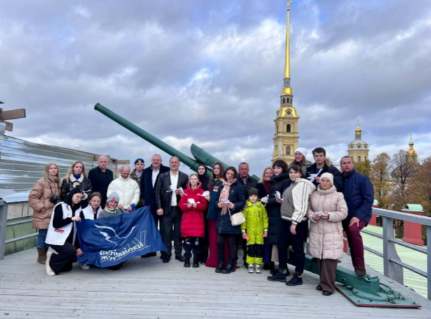

РЕГИОНАЛЬНОЕ ОБЩЕСТВЕННОЕ БЛАГОТВОРИТЕЛЬНОЕ ДВИЖЕНИЕ «БОЛЬШАЯ МЕДВЕДИЦА»
XIV Всероссийская акция памяти павших воинов России «Дни Белых Журавлей» - это комплексная программа мероприятий, направленных на увековечивание памяти о защитниках Отечества, погибших при исполнении долга в различных военных конфликтах.
Акция получила свое название в честь Дня белых журавлей, учрежденным народным поэтом Расулом Гамзатовым. За 13 лет реализации Акции памяти павших воинов России «Дни Белых Журавлей» было создано несколько десятков театрализованных постановок, выставок, спортивных мероприятий: митинг-реквием «Помни их, Россия!»; Турнир по дзюдо среди юношей, посвящённый памяти Героев России погибших при исполнении воинского долга - «Герои России»; Театрализованные концерты «Гори, гори! Моя звезда!», «О тех, кого сегодня нет...», «Нас двадцать миллионов незабытых...»; Автопробег «Дороги памяти»; Молодежная премия в сфере гражданско-патриотического воспитания; Флешмоб «Память поколений»; Турнир по армейскому рукопашному бою памяти Героя России В. И. Усачёва, "ЗАБЕГ ПАМЯТИ ГЕРОЕВ", Социально-культурный проект "Блокадные сказки Марии Петровой и пр.
В первый год реализации проекта в мероприятиях приняло участие не более 600 человек. С каждым годом количество участников стремительно увеличивается. В 2019 году в мероприятиях акции приняли участие 9000 человек. В год 100-летия Расула Гамзатова акция стала всероссийской. Представители более 60 регионов нашей страны приняли участие в online формате, многие города провели мероприятия и церемонии возложения цветов.
Количество благополучателей: 15000 человек.
Количество волонтеров: 130 человек.